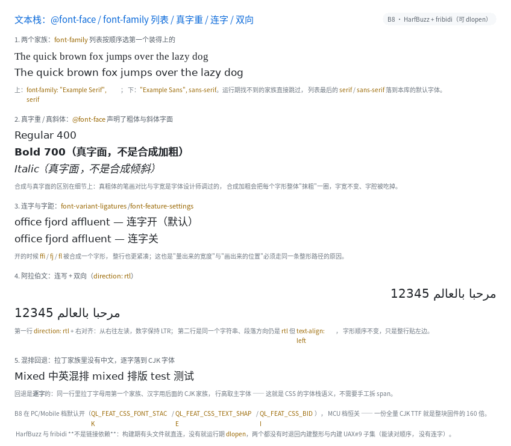

文本栈：@font-face / 家族列表 / 真字重 / 连字 / 双向

完整程序：example/35_text_stack/
在 B8 之前，本库只有"正文 / 等宽"两级字体，font-weight: 700 是把字形抹粗一圈、
font-style: italic 是把整行剪切倾斜，阿拉伯文会排成一串孤立形。B8 把三件事补上：
@font-face { font-family: "My Sans"; src: url(/opt/fonts/MySans-Regular.ttf);
font-weight: 400 }
@font-face { font-family: "My Sans"; src: url(/opt/fonts/MySans-Bold.ttf);
font-weight: 700 }
body { font-family: "My Sans", "Noto Sans CJK SC", sans-serif; }
.b { font-weight: 700; } /* 用真粗体字面 */
.ar { direction: rtl; } /* 阿拉伯文 / 希伯来文 */
1. @font-face：构建期只收声明
一行 @font-face 进 doc 里只占 8 字节（家族名、资源名都是文本池下标），字体文件
本身不进二进制。运行期 ql_ui_build() 时按这张表去注册：
- 有
ql_font_family_register()（或者 CSS 里直接写绝对路径）→ 打开文件； - 打不开就报错并跳过这条声明（不会让整个页面编译失败）。
只认四样：font-family / src: url() / font-weight / font-style。
unicode-range（子集化）、local()（要 fontconfig）、font-display 都构建期报错。
2. font-family 是列表，回退是逐字的
font-family: "My Sans", "Noto Sans CJK SC", monospace;
- 第一个装得上的家族当主字体（示例里是
My Sans）； - 后面的接成回退链：拉丁字母在主字体里，汉字在主字体里没有 → 自动落到 CJK 那一节；
- 全都装不上 → 落到
sans-serif（本库的默认字体）。
所以"中英混排"不需要拆 span，也不需要手工选字体。行高取主字体 —— 这跟浏览器一致。
实测细节：回退链的每一节是一个"包装体"，因为它不能改注册表里共享字体的
fallback_font（同一张字面可能被两条不同的链用到）。
3. 真字重与真斜体
@font-face 声明了 700 和 italic 字面后，font-weight: bold 真的换成那份粗体文件：
| 合成加粗 | 真粗体字面 | |
|---|---|---|
| 做法 | 每个字形右移 1px 再画一遍 | 换字体文件 |
| 字宽 | 不变 | 设计师调过的 |
| 字腔（counter） | 被吃掉、糊 | 保持清晰 |
只装了一份 regular 的机器上仍然退回合成 —— 这条兜底不能删，否则粗体会"消失"。
4. 连字与字距：量宽度和画字形必须走同一条路
.liga { } /* 默认：liga/clig 开，ffi/fj/fl 合成一个字形 */
.noliga { font-variant-ligatures: none; } /* 关掉 */
断行/居中/text-overflow 全靠"这一行多宽"。如果量的时候逐码位加宽度、
画的时候用整形后的字形，两者会差几个像素，于是文字看起来"没对齐"。
所以 B8 把两者统一到 ql_text_shape()：
- 有 HarfBuzz：真正的整形（连字、字距、复杂文字）；
- 没有 HarfBuzz：逐码位 + 逐字回退，与 B8 之前逐像素一致。
HarfBuzz 不是链接依赖：构建期有头文件就直连，没有就运行期 dlopen
（很多发行版只装运行库），两个都没有就退回内建路径。
5. 双向：先整形，后重排
.arabic { direction: rtl; }
<div class="arabic">مرحبا بالعالم 12345</div>
正确的顺序是：
按"字体 + 方向"切段 → 每段整形（HarfBuzz 按方向给出视觉顺序）→ 段落 RTL 时倒段
先 bidi 重排文本再交给 HarfBuzz 是错的：HarfBuzz 拿到的是一串已经反过来的字符， 它只能逐个画成孤立形，阿拉伯文就散架了（这个 bug 我们真的写下过，例程一跑就现形）。
数字要单独按 LTR 整形：UAX#9 里数字是"二级"，12345 不能变成 54321。
6. direction: rtl 还改对齐
direction: rtl 时 text-align: start 落在右边；显式写 left / right 仍以它为准。
unicode-bidi 目前按"单层"处理：normal / embed / isolate 同义，
bidi-override 记成"强制按段落方向排"。嵌套隔离与括号镜像没做。
7. 裁剪
| 开关 | PC / Mobile | MCU |
|---|---|---|
QL_FEAT_CSS_FONT_STACK |
开 | 关（需要 FreeType，MCU 没编） |
QL_FEAT_CSS_TEXT_SHAPE |
开 | 关 |
QL_FEAT_CSS_BIDI |
开 | 关 |
三个开关在 MCU 上不额外花一个字节（实现要 FreeType / dlopen，硬件上没有）；
关掉之后对应属性在构建期报错，不会静默降级。
8. 排查用的环境变量
| 变量 | 作用 |
|---|---|
QL_TEXT_SHAPE=builtin |
强制用内建整形（验证"没有 HarfBuzz 时像素一致"） |
QL_TEXT_BIDI=builtin |
强制用内建 UAX#9 子集 |
ql_text_shape_backend() / ql_text_bidi_backend() 会告诉你当前用的是哪条实现。